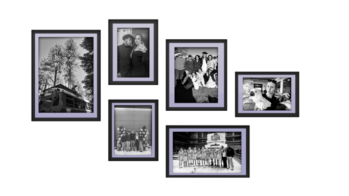

ABOUT
Tap/Hover over a picture to learn more!
Ask me about travel, Studio Ghibli movies, my current favorite Food Network show, my family, my favorite song at the moment, and women’s basketball!


ABOUT
Ask me about travel, Studio Ghibli movies, my current favorite Food Network show, my family, my favorite song at the moment, and women’s basketball!
